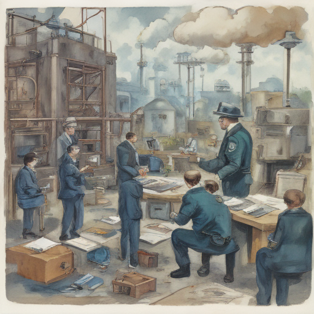

Today at the Ministry of Defence, Chris Van Hollen met with top officers to discuss recent security threats. We spent hours brainstorming strategies for our nation's safety. Outside, I saw smoke rising from a nearby refinery; reminded me again how important these official meetings are in this fast-paced world.

Keywords: Ministry of Defence, Chris Van Hollen, Bangkok oil refinery explosion
Fictional diary entry.